The “Baking Soda Water Shot” Everyone’s Talking About Is Real. But They’re Doing It Wrong.
You’ve already seen the videos, and I need to tell you this.
Stop.
Before you mix another glass of baking soda water, I need you to understand something.
Famous faces, talk show couches, and women suddenly talking about a baking soda shot that supposedly changes the way your body handles food.
But almost every version online, in videos, sales presentations, news articles, and even from TikTok influencers, leaves out the most important part of the recipe.
Baking soda is only one of three steps.
On its own, it won’t give you the result you’re expecting.
Use it by itself, or use the ingredients in the wrong order, and you may feel absolutely nothing.
My name is Dana Whitfield, the formulator behind the original recipe.
I’ve shared this recipe on several podcasts, including “The Oprah Podcast,” and many people copied it, explained it incorrectly, or left out important parts.
And before I show you what the three steps really are, I need to take you back to the moment I discovered why my own sister could eat less than I did…
and still gain weight.
If You Eat Less Than Your Skinny Friend and Still Gain Weight, This Is the Article You’ve Been Waiting For
Let me guess what your life looks like right now.
You’ve tried everything. The programs. The shakes. The gummies. The weight loss pens.
The treadmill that’s now just a very expensive clothes rack.
You eat less than that friend who seems to eat junk all the time and somehow never gains a single pound.
You move more than she ever has.
And your body seems to hold onto and store every pound as if its life depended on it.
Then your doctor says the two most insulting words in the English language:
“Eat less.”
As if you weren’t already trying.
As if you weren’t giving it everything you had every single day.
As if it were really that simple.
I know exactly how much it hurts to hear that.
Because those are the exact same two words I once said to my own sister.
And I have never been more wrong about anything in my life.
But before I tell you that story, I need to talk about what may be happening inside your head right now.
Because this is WHY nothing has worked until now.
It was never your willpower.
It was never your fault.
This isn’t hunger.
This isn’t weakness.
This isn’t a lack of discipline.
Your body was fighting against you. Every time you resisted, it seemed to push back even harder.
And the label people gave that struggle was:
“Lack of discipline.”
Lately, your entire feed has been filled with famous women talking about a “baking soda water shot.”
You’ve heard about it so many times that it’s starting to feel real.
Here’s what they’re leaving out.
Baking soda is only one of three parts.
Do it by itself, or do the steps in the wrong order, and you may feel absolutely nothing.
Do it the right way, and the weight may start coming off so quickly that you’ll wonder what finally woke up inside your body.
I’m going to show you exactly how.
Because I’m the woman who discovered the recipe in the first place.
Read this before you spend another penny on anything else.
I Was the Skinny Sister. I Told Her to Eat Less and Try Harder. I Was Dead Wrong.
My name is Dana.
I’m a formulator. I’m not a celebrity. I’m not a doctor on a stage. I’m not a face on a talk show.
My work has always been the unglamorous kind. Tiny scoops. Messy notebooks. A kitchen scale covered in powder. Testing the same thing over and over until the results stopped looking like luck.
And for most of my life, I was the “lucky” one. The naturally slim sister who could eat whatever she wanted and never think twice about it.
I used to believe that was because of something I was doing right. Some kind of discipline other people simply didn’t have.
So when my younger sister, Rachel, couldn’t lose the weight after having her kids, I told her the same lie your doctor tells you.
Eat less. Move more. Try harder.
I need to confess that, because it’s the entire reason I’m writing this.
I judged my own sister. Quietly, I believed that if she really wanted it badly enough, she could do it.
I was wrong.
Not a little wrong.
Completely, shamefully wrong.
Rachel ate less than I did. That’s a fact. I saw it with my own eyes.
She cut carbs. She cut sugar. She cut her portions.
And the day I finally discovered just how wrong I had been, it sent me down a path that ended with the exact recipe these videos are now based on.
They just left out the part that actually makes it work.
So I Measured Every Bite She Ate for Two Weeks. What I Found Stopped Me Cold.
Rachel is my little sister. Three kids, a job, a husband, and a body she didn’t recognize anymore.
Her youngest was three years old and she still looked, in her words, “five months pregnant.”
She got dressed in the closet so her husband wouldn’t see her. She had stopped being in photos with her own kids.
And there I was, the skinny older sister, telling her to eat less and walk more.
One day she looked at me with tears in her eyes and said, “Dana, I AM. I swear to God, I am.”
So I decided to prove it, one way or the other.
For two weeks, I measured and logged every single thing we both ate. I counted our steps. I wrote all of it down.
I will never forget the moment I looked at those two columns of numbers.
My little sister was eating less than me. She was moving more than me. And she was gaining weight, while I stayed thin doing half of what she did.
That’s when the shame hit me. She wasn’t lazy. She wasn’t lying. She wasn’t weak.
Something inside her body was doing the exact opposite of mine with the very same food.
No diet on earth was ever going to fix a problem that nobody had correctly named.
That was the night I stopped trusting everything I’d been taught, and started looking at what her body was actually doing with what she ate.
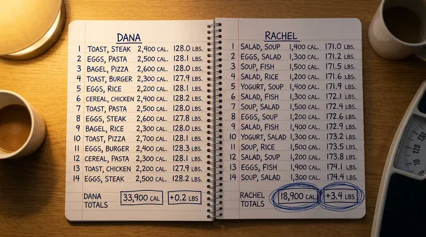
At 1 A.M. I Found the Study That Explained What Was Happening to My Sister
It took me months of digging through research most people never see.
Then one night, her kids asleep, my coffee cold, I found it.
A study on the cells in your gut that make the hormones controlling hunger, fullness, and what your body does with every bite you eat.
Burn it for energy, or store it as fat.
The paper had a line I read five times.
It said these cells can go dormant. They fall asleep when the environment in your gut becomes too acidic.
I sat there with my heart pounding.
Acidic gut. Sleeping cells. No signal.
That was Rachel. That was every woman I knew who ate like a bird and still couldn’t lose a single pound.
What I read next explained not just why she was stuck, but exactly how to wake those cells back up.
And it was simpler than you could possibly imagine.
It’s Not That You Eat Too Much. Your Body Is Storing Food It Should Be Burning.
Here’s what’s actually happening inside you. Plain and simple.
Every bite you eat has to go one of two places.
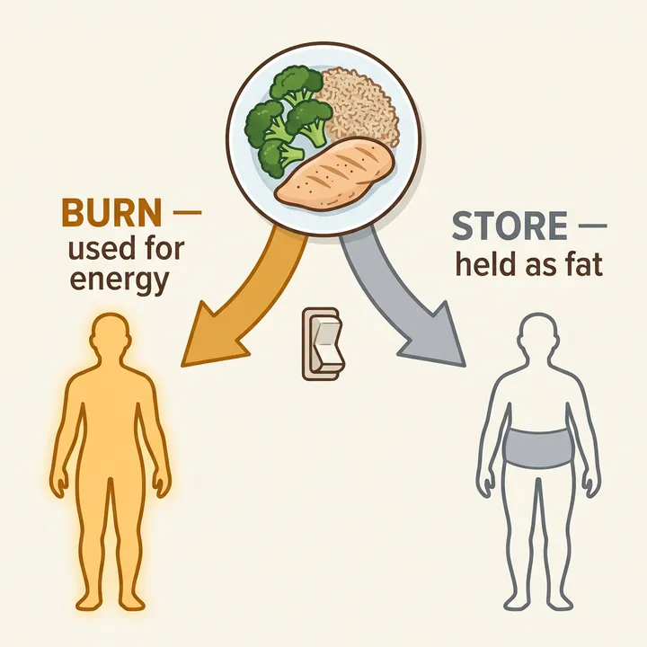
It gets burned for energy, or it gets stored.
That decision is not random. One set of signals tells your body: burn it. Another silence tells it: store it.
When the signal is working, you feel full. Food leaves your mind. Your body burns what you eat instead of clinging to it.
That is the ‘lucky’ metabolism thin women seem to have. They are not always eating less than you. Their bodies are simply doing something completely different with the same plate of food.
But when those cells fall asleep, your body never gets the message.
You can finish dinner and still want something sweet. You can eat a full lunch and think about snacks an hour later. You can do everything “right” and still feel like your body is holding on.
Now you can see why eating less never solved the whole problem.
You were trying to eat less while your body was still screaming: STORE EVERYTHING.
Same food. Opposite response.
And there’s a second thief.
Even when your gut makes some of these hormones, an enzyme called DPP 4 breaks them down quickly.
So hear me clearly.
It is not in your head. It is not a character flaw. Your body’s ‘stop eating’ signal has gone quiet.
And quiet cells can be woken back up.
Before You Read Another Word, See How Many of These Sound Like You
Maybe you’re thinking, “That explains Rachel. But how do I know this has anything to do with me?”
Fair question.
The women who responded best to the original recipe did not all look the same. Some needed to lose 15 pounds. Some needed to lose 50. Some were mothers. Some were long past menopause. Some had tried injections. Some had spent decades dieting.
But they kept describing the same body response.
If four or more of these sound familiar, the problem may not be how hard you are trying.
- You eat less than people who stay naturally thin but your body holds on anyway.
- You wake up flatter and end the day feeling swollen, heavy, or bigger around the middle.
- You think about food even when you know you are not physically hungry.
- Your body seemed to “change the rules” after 40, pregnancy, menopause, stress, or years of dieting.
- You can lose weight through restriction or injections, but it returns the moment you stop.
- Your doctor says your labs look “fine,” yet you know your body is not responding normally.
- Your belly, waist, face, or arms seem to hold weight first and release it last.
- You are tired of starting over every Monday.
That was Rachel’s response.
And once I understood it, there were only four ways to approach it.
There Are Only Four Ways to Fix This. Three of Them Will Fail You.
Once I understood the real cause, the question got simple.
How do you wake the cells back up and get your body burning again?
There are only four ways anyone has ever tried. Let me save you years.
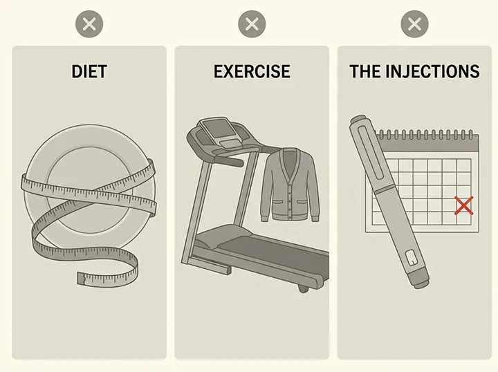
You already know how this ends. Eating less does not automatically restore a weak fullness signal.
You can white knuckle your way through hunger for a while. But if your body still acts like it never got the message, the battle starts again.
Movement is good for you. But exercise alone cannot silence food noise or fix every hormonal signal.
Remember, Rachel moved more than me and still gained.
Ozempic. Wegovy. They can force the signal while you are using them. But the bill never stops, the needle never stops, and for many women the hunger comes roaring back the moment the shots do.
You lose the weight while you rent the signal. Then you stop paying and your body goes right back to the same broken instructions.
Baking soda. Ginger. Berberine.
Maybe you’ve already tried one of them on its own and “felt nothing.” Of course you did. One ingredient can only do one job.
Berberine alone cannot wake the cells, protect the hormone, and flip your body from STORE to BURN.
But all three together, in the right forms, the right ratio, and the right order? That was the combination that changed everything for Rachel.
And it’s the one thing those viral videos never explain.
Let me show you why the order matters.
Wake the Cells. Protect the Hormone. Flip the Switch. In That Order.
The recipe has three ingredients. Each one has one job.
Miss one, and the whole thing weakens. That’s why plain baking soda by itself is not the full answer.
Baking soda helps neutralize the acidic environment that keeps those gut cells asleep.
Think of it like opening the curtains in a dark room. The cells that had gone quiet finally get the conditions they need to wake up and start signaling again.
Remember DPP 4, the enzyme that breaks down GLP 1 and GIP?
Gingerol helps block the enzyme that chews through your fullness hormones before they ever reach your brain.
In plain English: the ‘stop eating’ message finally survives long enough for your brain to hear it.
Berberine flips AMPK, the switch that tells your body whether to burn what you eat or stack it on your waist for later.
When that switch flips, food starts becoming fuel again instead of another layer around your stomach.
Wake. Protect. Flip. That is the entire recipe.
Not one ingredient. Three, in the right forms, in the right amounts.
But knowing the ingredients was the easy part.
Actually getting them to work together in real life almost broke me.
Knowing the Recipe Wasn’t Enough. It Took Me Almost a Year to Make It Actually Work.
Maybe you are already reaching for your phone and thinking exactly what I thought.
“If it’s just baking soda, ginger, and berberine, I’ll grab all three and mix them myself.”
I tried that first. It was a disaster.
Here’s what nobody tells you. The three ingredients are only as good as the dose, the form, the ratio, and the way they are combined.
The ratio problem: Too much of one ingredient overwhelms the rest. Too little and the full system never comes together.
The form problem: Grocery store spice is not the same as a concentrated extract. Cheap berberine and inconsistent powders do not behave like controlled, standardized forms.
The sequence problem: The formula has to support the environment, protect the signal, and then support the metabolic response. Throwing random amounts into a glass is not the same thing.
I spent months measuring tiny amounts on a digital scale.
I changed one variable at a time. I wrote down taste, tolerance, timing, and what repeated.
I threw out far more than I kept.
Most mornings I felt nothing.
Then one morning, I noticed the difference. Calm. Clear. No frantic search for breakfast. No mid morning pull toward the pantry.
I made it again the next day to be sure. And the next.
The response repeated.
That was the formula. Not “baking soda and some spices.”
An exact mixture. In exact forms. In a repeatable ratio.
That’s what I finally handed my sister.
I Watched My Sister Come Back to Life. One Week at a Time.
I gave Rachel that exact mix. One scoop in water, every morning.
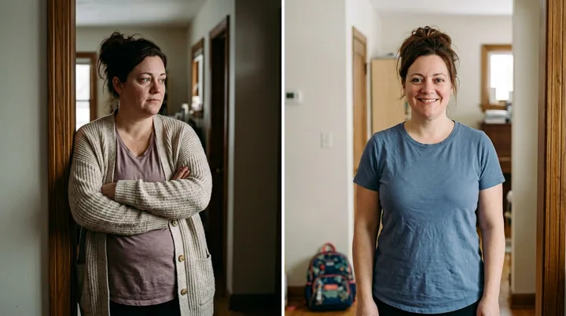
No crash diet. No new gym plan. Just one simple ritual.
She called me a week later. Not crying this time.
“Dana… the noise is gone.”
That constant chatter about food… what can I eat, what can’t I, how much, when can I eat again had gone quiet.
Then the rest began to follow.
- Days 1 to 3She stopped prowling the kitchen between meals. She kept waiting for the usual afternoon craving. It never arrived with the same force.
- Week 1Her portions began shrinking without a fight. She would put the fork down and realize she was done… not deprived, just satisfied.
- Week 2The tight, swollen feeling around her middle started easing. Her rings fit better. Her face looked less puffy in the morning.
- Week 4The scale was moving, but the bigger surprise was how differently her clothes fit. Jeans that had punished her waist finally buttoned.
- Month 2Other people noticed. Her husband asked what had changed. Her friends said she looked “lighter,” even before they knew the number on the scale.
- Months 3 to 4The weight loss became the visible proof of something deeper: her body was no longer fighting every meal.
She wasn’t forcing herself to eat less. She finally felt satisfied on less.
The scale started moving because the daily battle around food was changing first.
She lost the first several pounds quickly enough that I told her to slow down and take breaks when needed.
More is not better. This is not a race. Use the formula exactly as directed and give your body time to respond.
Four months later, Rachel was down 41 pounds.
But the number on the scale isn’t the part that still makes me cry.
For three years she got dressed in the closet so her husband wouldn’t see her. She stopped letting anyone photograph her.
Now look at her.
She went to the lake and didn’t reach for a cover up. She’s in every single photo with her kids now.
That is the part I would pay any amount of money for.
The Weight Was Only the Part Everyone Could See
Rachel expected the scale to change.
She did not expect the rest of her life to change with it.
The 4 PM crash she had built her day around stopped controlling her afternoons.
She woke up less swollen.
Her face looked clearer and less tired.
She stopped feeling guilty every time she ate something she enjoyed.
She had energy to play with her kids instead of watching from the couch.
She slept more peacefully because she was not ending every night angry at herself.
Her skin looked brighter. Her clothes sat differently. Her posture changed.
And the strangest part?
Food stopped being the loudest voice in the room.
That is what women mean when they say they “feel like themselves again.”
Not just smaller.
Present. Clear. Comfortable. In control.
So I Made the Real Thing. The Original Powder, Dosed Correctly. I Call It SlimSoda.
I couldn’t keep mixing it by hand for the whole country. So I did it properly.
I took the formula I had spent nearly a year refining to an FDA registered manufacturing facility.
Baking soda to wake the cells. Concentrated gingerol to protect the hormone. Bioactive berberine to flip the switch.
In controlled forms. In a consistent ratio. In the powdered format the ritual was built around.
One scoop in a glass of water each morning. Three seconds. That’s the whole ritual.
I call it SlimSoda.
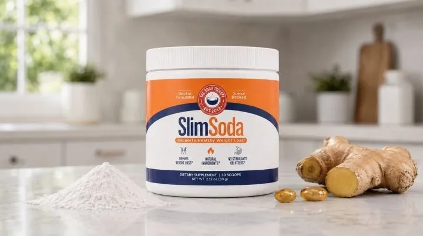

Let me be clear about what it is NOT.
It’s not a drug. It’s not an injection. It’s not a starvation plan.
It’s not another single ingredient trick that asks one compound to do three jobs.
It is the complete three part recipe in one repeatable morning scoop.
And I made it for the women I had been mixing it for all along. Not for a celebrity markup.
What a Normal Day Can Start Feeling Like Again
This is the part that is hard to understand until you feel it.
You take one scoop in water in the morning.
Then you go live your life.
At breakfast, you eat and the meal feels finished when it is finished.
At 11 AM, you realize you have not been negotiating with yourself about a snack.
At lunch, you stop because you are satisfied, not because an app told you the portion was over.
At 3 PM, the vending machine, pantry, or leftover cake is no longer screaming your name.
At dinner, you enjoy your food without turning the entire evening into guilt and compensation.
At night, the refrigerator stays closed.
And the next morning, you wake up feeling a little less heavy, a little less puffy, and a lot more in control.
One day like that feels good.
Weeks of days like that can change a body.
Real Women. Real Before and Afters. Different Bodies. The Same Response.
Rachel was just the beginning. These women matter because each one had a different reason to believe SlimSoda would not work for her.
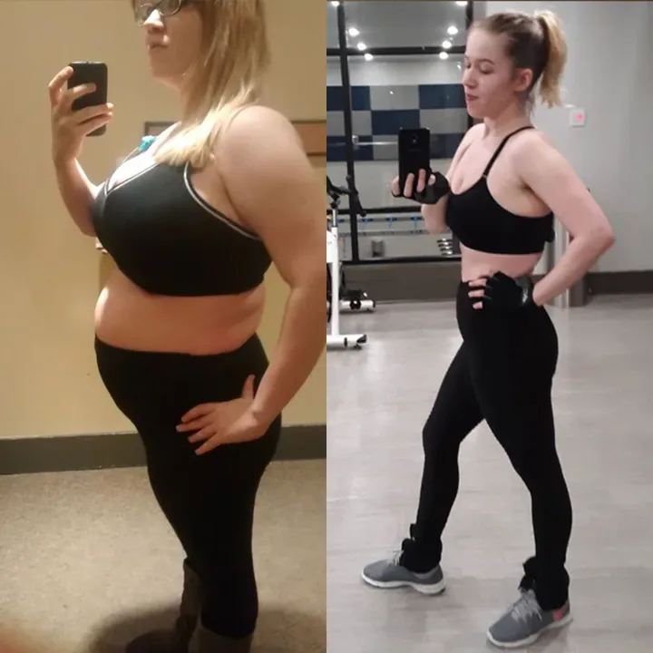
“I hit 172 lbs and felt terrible. In 3 months, I'm down to 148 lbs. My thighs dropped 2 sizes, my face is less puffy, and I'm back to wearing shorts. I have actual energy to work out now and no longer feel that heavy sluggishness.”
Miriam ★★★★★ Verified Purchase
“I used to lose weight only if I starved myself. SlimSoda actually helped regulate my body for real. I lost 38.5 lbs in 3 months, my belly shrank significantly, even my stretch marks lightened, and now I fit into size 40 with no squeezing. It changed my life.”
Vanessa ★★★★★ Verified Purchase
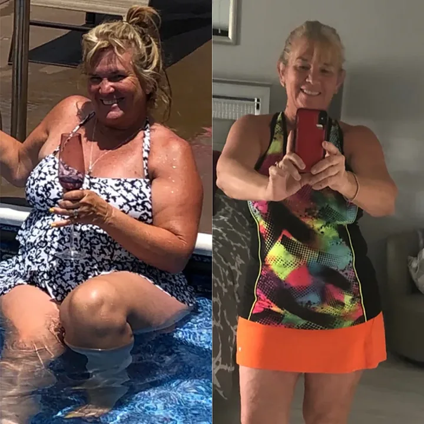
“I lost 18.2 lbs in the first month alone, and I didn't even change my diet drastically. My belly bloating decreased, my skin feels firmer, and I can finally wear jeans without feeling ashamed of my midsection.”
Melinda ★★★★★ Verified Purchase
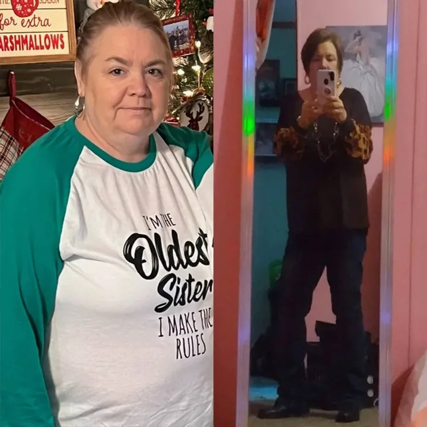
“I used to step on the scale every week crying. Now, 5 months later, I'm 33 lbs lighter. My double chin is gone, my legs are slimmer, and I fit into clothes that had been stored away for 4 years. I look in the mirror and barely recognize myself.”
Vicki ★★★★★ Verified Purchase
“I lost 14 lbs in 6 weeks and the difference is insane. My love handles are practically gone, my thighs don't rub together as much, and I actually have a jawline again. I didn't even exercise, just took this daily.”
Shannon ★★★★★ Verified Purchase
Would SlimSoda Make Sense for a Body Like Yours?
You do not need to be Rachel.
You do not need to be a certain age, a certain size, or someone who has never tried anything before.
- Women over 40 whose bodies seem to have changed the rules.
- Mothers who never felt like their metabolism came back after pregnancy.
- Women in perimenopause or menopause who feel hungrier, puffier, and less responsive than before.
- Women exhausted by food noise and the constant mental negotiation around eating.
- Women who lost weight with injections but do not want an expensive lifetime dependency.
- Women who have tried berberine, ginger, or baking soda alone and felt nothing.
- Women who want a simple morning ritual instead of another complicated program.
This is not for someone looking for a one day miracle.
It is for the woman who is ready to give a complete system enough time and consistency to work.
The Celebrity Capsule Is $100. The Injections Can Cost $1,000 a Month. Here Is What Staying Stuck Has Already Cost You.
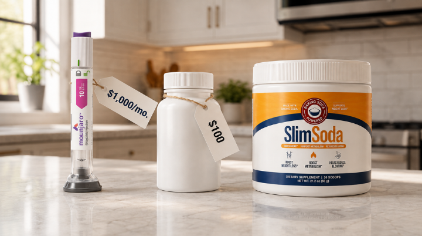
Let’s talk honestly about money.
Not just the price of SlimSoda.
The price of continuing the way things are.
The 'Injection' Route:
- Ozempic / Wegovy / Mounjaro: $500 to $1,300+ per month (without insurance)
- Refills that never end, stop paying, the weight comes back
- Nausea, muscle loss, and a body that forgets how to do the job on its own
- Annual total: $6,000 to $15,600+
(For a signal you're renting, not fixing.)
The 'Supplement Graveyard' Route:
- $49 for gummies that tasted like candy and worked like candy
- $59 for a metabolism powder that did nothing but turn your water green
- $100 for trendy capsules built around one piece of the idea
- $129 for a program you stopped opening after week two
- Total: $300 to $500+ per round… and you've done this more than once.
(The average American woman spends over $2,000 on weight loss products before finding something that works.)
The 'Just Trying to Stay Afloat' Route:
- A gym membership you kept paying because canceling felt like admitting defeat
- New jeans in a larger size. Then another size.
- Takeout after a day of restricting so hard that you finally broke at night
- A "fresh start" every January, every Monday, every time you saw a photo of yourself you hated
- Total: It's not one number. It's $30 here, $80 there, over and over for years.
And then there is the cost nobody puts on a receipt.
Another summer in a cover up.
Another family photo you volunteer to take instead of standing inside.
Another year of telling yourself you will deal with it later.
Doing nothing is not free. You have been paying for it every morning in the mirror.
It may be the most expensive thing you keep buying without ever pulling out your credit card.
Rachel Didn’t Get Her Body Back in Two Weeks. She Got It Back in Four Months. That Changes What You Should Order.
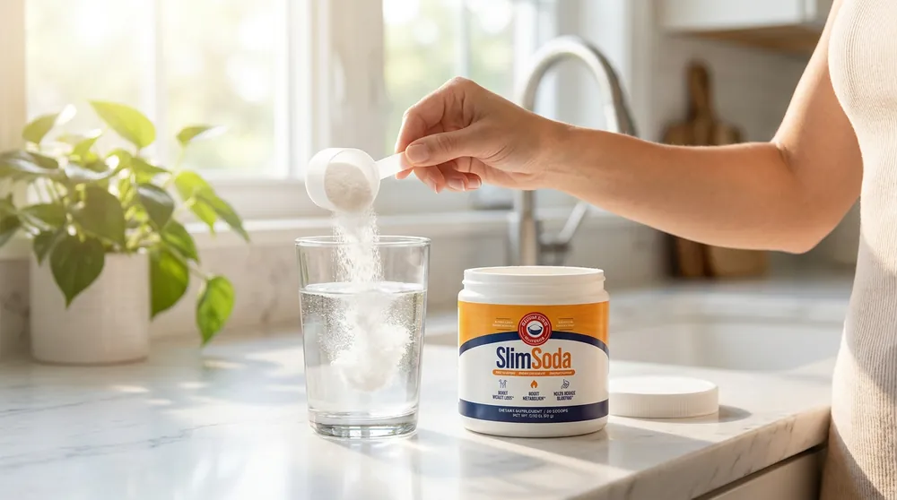
I need to be honest with you about something before you see the offer below.
When Rachel called me in week one and said the food noise was gone, that was real.
Week two, the scale started moving.
But the woman in that lake photo… the one standing in the water with her kids instead of hiding behind the camera… that was month four.
Not because the recipe is slow.
Because your body has been running the same instructions for years. And a response that has been repeating that long does not change because you tried something for a few mornings.
Here is what actually happens across the three steps.
The baking soda starts waking the cells first. That is what you notice early. It is why the food noise can start getting quieter.
The gingerol protects the hormone once those cells begin producing it again. That is what helps the effect hold instead of fading by the afternoon.
And the berberine works on the switch itself, the instruction that decides whether what you eat gets burned or stored. That is the slowest of the three. And it is the one that decides whether the change lasts.
Wake. Protect. Flip.
The first signs can come quickly. Consistency is what gives the complete recipe a fair chance to do its work.
This is exactly why women who tried baking soda alone felt nothing. And why the ones who tried something for two or three weeks and quit felt like failures.
They were not failures. They were early.
So when women ask me how much SlimSoda they should order, I stopped being gentle about it.
Order enough to finish what you start.
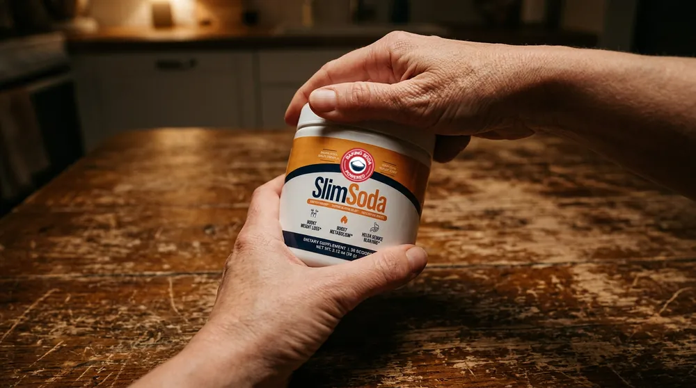
So I Made the Decision My Business Team Hated
Every SlimSoda formula is personalized. And right now, demand is way higher than what we can produce.
We managed to reserve 300 kits for this audience. But honestly, they won't last until tomorrow. And I'm not saying that to pressure anyone. It's just the truth.
So here's the deal. You won't find Slimsoda in pharmacies, and there's a reason for that.
If Big Pharma got their hands on this, they'd mark it up 6 times higher. And honestly, that's just wrong.
You also won't find it on Amazon or eBay. Why? Too many counterfeits, too many fakes, and I refuse to risk your health with something you're putting inside your body every single day.
Every ingredient inside Slimsoda is pharmaceutical grade, made in the same type of facility that produces prescription drugs.
That's the only way I can guarantee what you're getting is real.
Now, that level of Quality makes production expensive. When we first launched, one tub cost $185, and people were happy to pay it because it worked.
But then Oprah and other celebrities talked about it publicly, and overnight everything changed.
They wanted me to sell SlimSoda one tub at a time because the demand is too high.
I refused.
Because I know exactly what happens when a woman finally finds something her body responds to.
She starts with one tub.
The food noise gets quieter.
Her jeans feel different.
Then the tub gets low. She skips a few mornings to make it last. The routine breaks. And she wonders whether her body stopped responding when the truth is, she simply ran out.
I did not want that to happen with the original recipe.
After all, I didn't create this to help a few. I created it to reach every woman who needs it.
So until those 300 tubs run out, I'm doing something I've never done before. I'll personally cover the cost of 3 tubs for you.
Today and only today, you can secure a full 6 month supply of Slimsoda for the price of just 3 tubs, all paid upfront.
That brings your cost down from $59.99 to just $19.99 per tub.
The price you see above is reserved for qualified readers only.
Because here's the thing,
Not every body profile matches the SlimSoda protocol.
Here's how it works.
- First, you fill out a quick health profile so I can personalize your formula. Takes about 30 seconds.
- I need to know about your age, current weight range, body response, food noise, and what you have already tried.
- At the end, you will see whether this is the right fit for you, If it does, your $19.99 per tub reader price and three free tubs will be unlocked on your result.
So don't wait, click the button right now and grab your kit before these 300 spots are gone.
90 day money back guarantee · empty tubs accepted
WARNING: By The Time You’ll Be Reading This, This Offer May Already Be Sold Out!
I do not make SlimSoda the way trend products get made.
The entire point is consistent forms, controlled ratios, and a formula that repeats from scoop to scoop.
That means production is slower than dumping generic powders into capsules.
The launch inventory was made in a limited run.
And the free tub allocation specifically, the batch set aside for the three free tub offer is finite. I cannot simply add more to it because traffic went up.
We have already seen what happens when this spreads between women. Rachel told her friends. Her friends told theirs. Hundreds of small kitchen batches became impossible for me to keep up with.
The same thing is happening now, at a scale I did not plan for.
If you click and still see the six tub offer, there are allocations left in this batch.
If it is gone, it is gone. I am not going to fake a countdown and insult your intelligence.
Use the Whole Supply. If the Scale Doesn’t Move, I’ll Give You Every Penny Back.
I know you’ve been burned. So I’m taking the risk off you.
Try SlimSoda for a full 90 days. Use the tubs.
Watch the first signs. The food noise goes quiet. You stop prowling the kitchen. Your stomach looks less swollen. Your jeans stop fighting you. Then watch what happens on the scale.
If the scale does not move, if the food noise does not quiet down, or if you do not feel your body finally responding, email my team and ask for your money back.
Empty tubs. No store credit nonsense. No interrogation. No one is telling you that you “did it wrong.”
If you don’t get what you’re looking for or you think there's a better solution on the market for your condition, the customer support team will return 100% of your purchase price.
And no this is not a type of guarantee that every other company does nowadays.
This is no gimmick.
Want proof?
Try emailing or calling SlimSodas ’s customer service.
You can literally reach them 24/7.
Simply call their support team at (323) 332 1649 or email them at support@slimsodapowder.com
You can also find this information on their official encrypted website.
You keep the results or you keep your money. The only thing you cannot do is stay trapped in the same place.
Here Is Exactly What Happens After You Click
- Tap the button below and answer five quick questions about your age, current weight range, body response, food noise, and previous attempts.
- Check if you get approval for SlimSoda personalized formula.
- Unlock today’s reader only Buy 3, Get 3 Free offer if the allocation is still available.
- Confirm your recommended package on the secure checkout page.
- Begin the simple morning ritual when your SlimSoda arrives.
One scoop. One glass of water. Three seconds.
90 day money back guarantee · empty tubs accepted
Then get on with your day and give the complete recipe the consistency it was designed for.
Three Months From Now, You’ll Be Living One of Two Stories
Here’s the truth no one likes to say.
This pattern rarely fixes itself because you read one more article.
Path one is familiar.
Another Monday. Another restriction plan. Another expensive tub with one trendy ingredient. Another burst of motivation followed by the same hunger, the same food noise, and the same feeling that your body is betraying you.
Or the version where you did start something and ran out before the third step finished its work, and never found out what consistent mornings could have looked like.
Another summer in a cover up.
Another photo you are not in.
Another year of saying, “I wish I had started sooner.”
Path two is different.
You stop treating the problem like a moral failure.
You wake the cells. You protect the hormone. You flip the switch.
Three seconds every morning. Simple enough to actually do. Powerful enough to finally change the instructions your body has been following.
And for the first time in years, you give your body a chance to burn what you eat instead of storing every bite like an emergency.
Picture the food noise quieter.
Getting dressed with the door open.
Your husband looking at you the way he used to.
Being in the photo with your kids instead of always behind the camera.
That is not vanity.
That is you, coming back.
You gave your body to your children, your work, your family, and everyone who needed you.
It is okay to want a piece of yourself back.
SlimSoda is the complete morning recipe I wish I had understood before I judged my own sister.
Now you get to decide whether you keep managing the same struggle or finally test a different system without carrying all the risk.
You have spent enough time trying random solutions and hoping one of them finally sticks.
Now you can see your SlimSoda body profile, understand what your answers are pointing to, and unlock the package recommended for the way your body is responding.
Answer the five questions below. Your result is ready in less than a minute.
5 questions · 60 seconds · 90 day guarantee
With hope,Dana WhitfieldFormulator and Researcher
P.S. Rachel just sent me another lake photo. She was not standing behind the camera. She was in the water with her kids, laughing. That is the transformation I care about most.
P.P.S. Plain baking soda is not the recipe. It only does the first job. SlimSoda does all three, in order: Wake the cells. Protect the hormone. Flip the switch. That is the part every viral video leaves out.
P.P.P.S. The three free tubs are tied to the limited reader allocation. Take the quiz to see whether the six tub offer is still available for your profile today.
Corinne Vasquez
The “burn vs store” diagram FINALLY made me understand what my body has been doing for the last 12 years. I’m a physical therapist. I’ve told hundreds of patients “calories in, calories out” my whole career. Ordering this today and I owe every single one of my patients an apology.
Dana Whitfield
Corinne, don’t beat yourself up. You were taught what everyone was taught. The fact that you’re open to updating is what makes you a good clinician. Welcome to the new understanding. ♥
Michelle Ostrander
I already tried the “DIY” version. Bought baking soda, ginger powder, and berberine capsules for like $30 at Whole Foods. Did it for 5 weeks. NOTHING. Now I read the section about how the ratios and forms have to be exact and I feel like an idiot. Ordering the real thing.
Amber J. Woolworth
Michelle SAME. I did the DIY version for 2 months. Cheap ginger from the grocery store has almost zero gingerol in it, I finally looked it up. That’s exactly what she said in the article. Wasted 8 weeks. Not making that mistake twice.
Katrina Bienvenida
2 kids. 47. 38 pounds up from my wedding weight. Have not been in a photo with my kids in probably 4 years. Just ordered the 3 tub. Coming back in 90 days with a family photo. Screenshot this.
5 questions · 60 seconds · 90 day guarantee
ADVERTISEMENT. This page is a paid advertisement produced for SlimSoda®. Individuals featured are compensated for their stories; results vary from person to person.
These statements have not been evaluated by the Food and Drug Administration. This product is not intended to diagnose, treat, cure or prevent any disease.
SlimSoda Powder · support@slimsodapowder.com · (323) 332 1649
© 2026 SlimSoda®. All rights reserved.